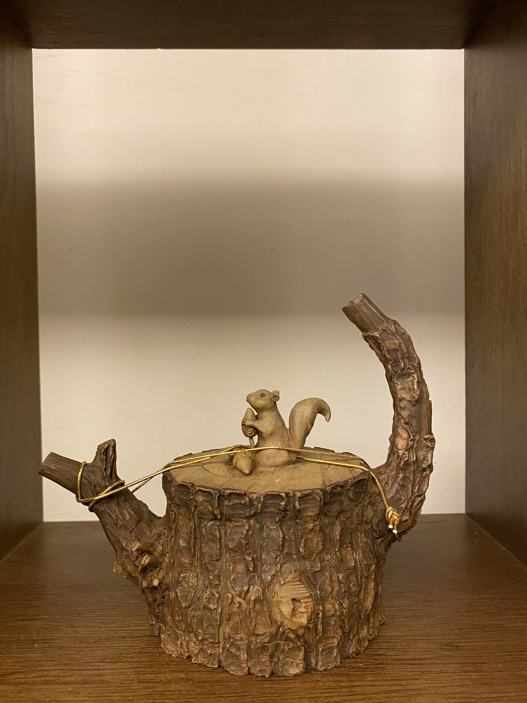

This serie is about the five elements,
Fire (火), Water (水), Wood (木), Metal (金), and Earth (土).
FIRE
appears when we fire the teapot in the kiln.
WATER
appears when we brew tea with the teapot.
WOOD
represents the surface of the teapot we try to mimic with clay.
METAL
indicates the iron parts (nails...) which are also made of clay.
EARTH
(OF COURSE)is the ONLY element we use for making the entire teapot!
The metaphor (meaning) of five elements is
When we brew tea with the teapot,
as soon as we pour water inside,
the five elements operate and bring out energy and magical power.
(SUPER COOOOOOL~)(ISN'T IT?!)
WOOD WITH SQUIRREL 心滿意足

This serie is about wood.
The wooden surface looks so genuine
that many people say the teapot smells good with the wood odor.
(this is really funny and interesting...)
You may wonder why there is a squirrel on top.
The reason is because
(Actually I'm not pretty sure...)
Th chinese prononciation of "SQUIRREL"
is similar to "PINE" tree.
Besides,
You may also be curious about the name of the teapot.
心滿意足? Satisfy?
We can see that
the little squirrel is holding a nut in its arms.
It actually tells us to
(instead of being greedy)
be contented with everything we have around us.